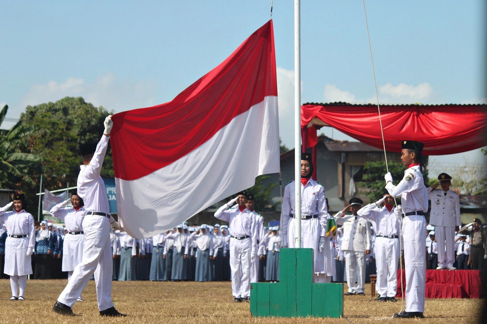
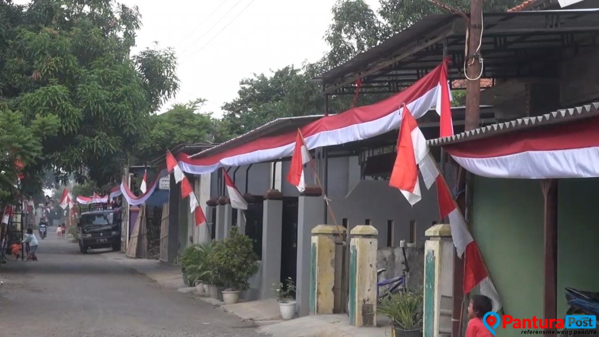
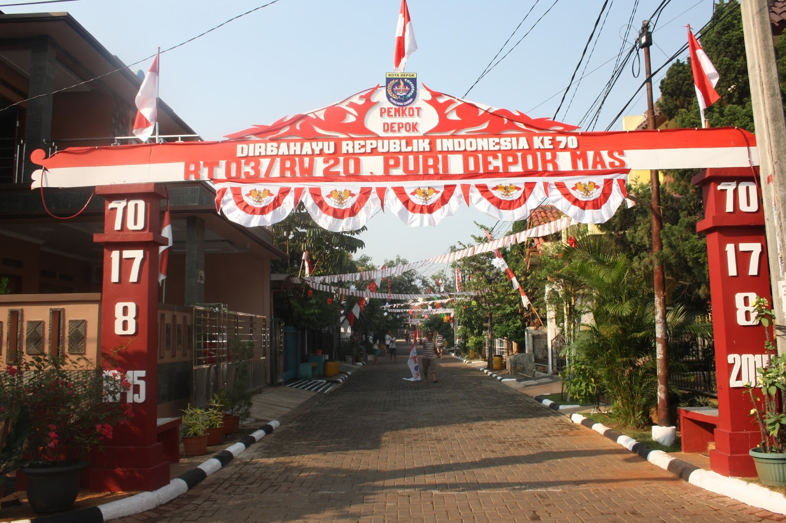
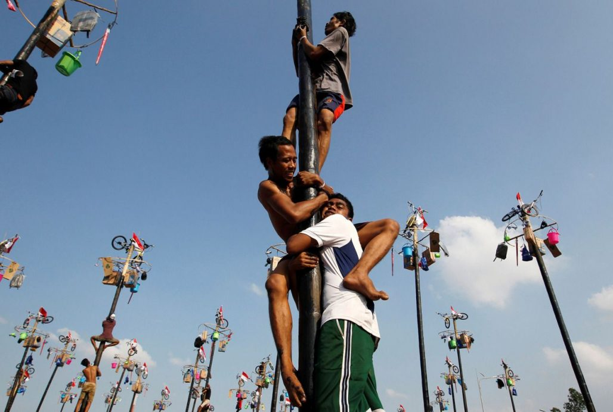
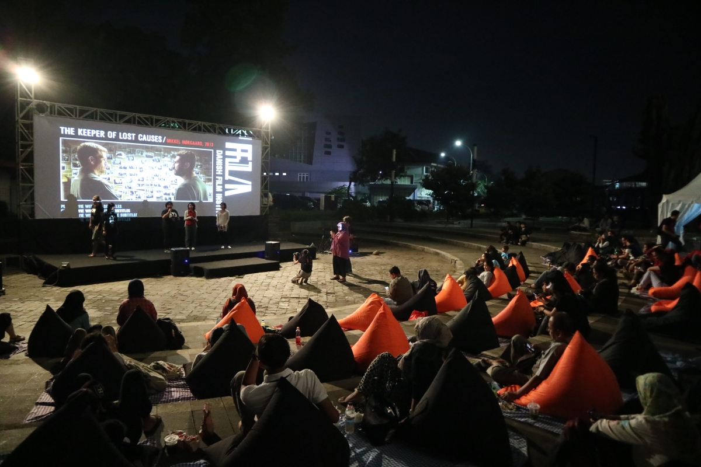
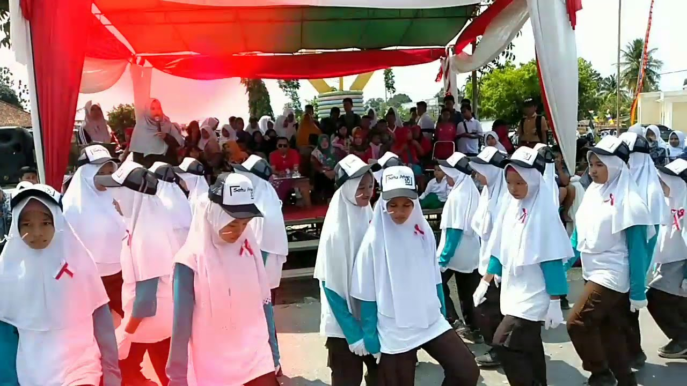
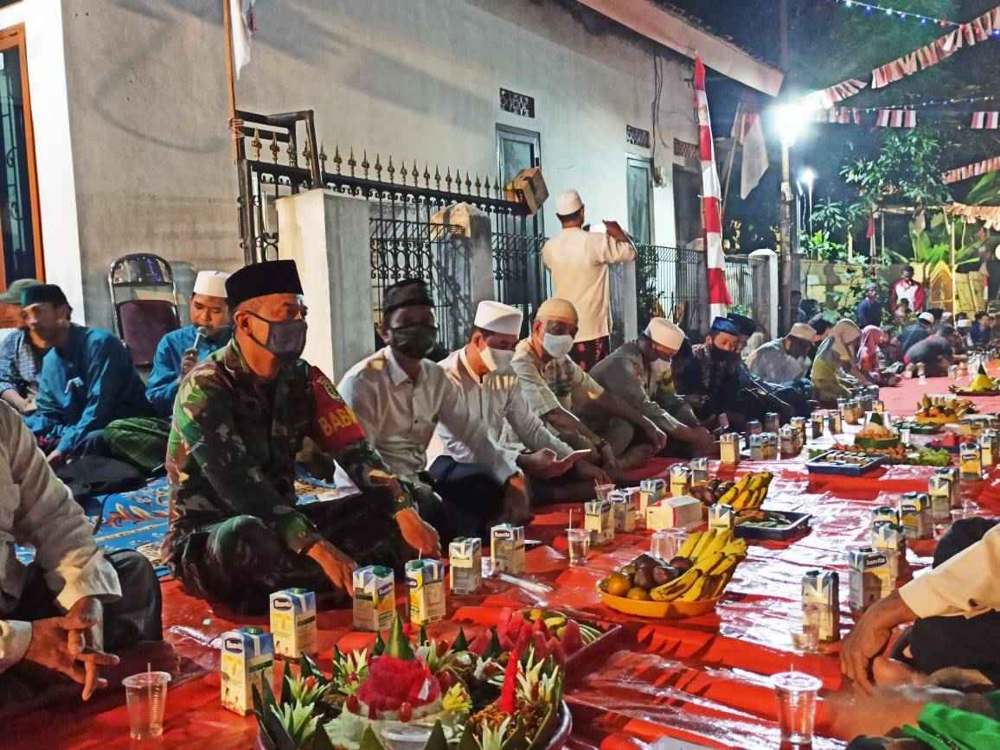
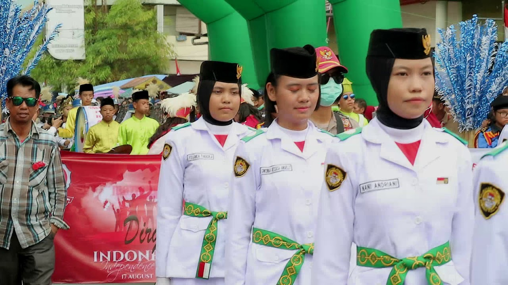

Setiap tanggal 17 Agustus, warga Indonesia merayakan dan mensyukuri peringatan kemerdekaan Indonesia dengan melakukan upacara bendera serta biasanya diselenggarakan berbagai macam perlombaan, yang populer adalah panjat pinang. Pada tanggal 16-nya, presiden Indonesia akan memberikan pidato kenegaraan di Gedung MPR untuk menyambut hari kemerdekaan tersebut. Kewajiban mengibarkan bendera merah putih di hari kemerdekaan diatur dalam Undang-Undang Republik Indonesia Nomor 24 Tahun 2009 tentang Bendera, Bahasa, dan Lambang Negara serta Lagu Kebangsaan Indonesia pada Pasal 7 ayat 3.
Tema besar peringatan HUT ke-78 Republik Indonesia adalah "Terus Melaju untuk Indonesia Maju". Tema ini mengandung makna bahwa Indonesia harus terus bergerak maju dan berkembang dalam berbagai sektor untuk mencapai tujuan sebagai negara maju. Tema ini juga mengajak seluruh rakyat Indonesia untuk bersatu dan bekerja sama dalam membangun Indonesia yang lebih maju dan sejahtera.
Tanggal 17 Agustus merupakan hari berbahagia seluruh rakyat Indonesia, lantaran pada tahun 1945, Indonesia berhasil memproklamasikan kemerdekaannya dari penjajahan Belanda. Selain upacara bendera dan perlombaan, di beberapa daerah di Indonesia juga biasanya diselenggarakan tradisi lainnya yang membuat perayaan semakin meriah, seperti pawai jampana di Kota Bandung dan barikan di Malang.
Pada tanggal 17 Agustus, Indonesia merayakan Hari Kemerdekaan dengan berbagai tradisi yang dilakukan di seluruh negeri. Berikut adalah penjelasan lebih detail mengenai setiap tradisi:
1. Upacara Bendera

Setiap tahun pada tanggal 17 Agustus, Indonesia merayakan Hari Kemerdekaan dengan berbagai tradisi yang dilakukan di seluruh negeri. Salah satu tradisi penting pada perayaan ini adalah upacara bendera yang dilakukan untuk menumbuhkan rasa nasionalisme dan membentuk karakter bangsa Indonesia. Pada upacara bendera, dilakukan pengibaran Sang Saka Merah Putih oleh petugas diiringi Lagu Indonesia Raya, dilanjutkan dengan hening cipta untuk mengenang dan mendoakan arwah para pahlawan yang telah berjuang untuk kemerdekaan negara.
2. Memasang Bendera Merah Putih di Setiap Rumah

Tradisi ini melibatkan memasang bendera merah putih di setiap rumah sebagai bentuk penghormatan dan rasa cinta pada tanah air. Bendera merah putih menjadi simbol kemerdekaan dan kebanggaan bagi warga Indonesia. Pemerintah juga menghimbau masyarakat untuk mengibarkan bendera merah putih selama satu bulan penuh di bulan Agustus.
3. Menghias Gapura dan Jalan Perumahan

Tradisi ini melibatkan menghias gapura dan jalan perumahan dengan berbagai dekorasi yang bernuansa merah putih. Hal ini dilakukan untuk memberikan kesan meriah dan semangat kemerdekaan pada lingkungan sekitar. Menghias gapura dan jalan perumahan menjadi salah satu cara untuk memeriahkan suasana perayaan kemerdekaan.
4. Lomba

Tradisi ini melibatkan mengadakan berbagai macam perlombaan yang bertemakan kemerdekaan. Lomba-lomba ini dapat meliputi lomba makan kerupuk, lomba balap karung, dan lain sebagainya. Lomba-lomba ini diadakan untuk menghibur dan memeriahkan perayaan kemerdekaan serta memupuk semangat persatuan dan kebersamaan.
5. Menonton Layar Tancap

Tradisi ini melibatkan menonton film atau acara televisi di layar tancap yang dipasang di tempat umum, seperti di lapangan atau di taman kota. Menonton layar tancap menjadi salah satu cara untuk bersama-sama menikmati momen perayaan kemerdekaan dan menghibur diri bersama keluarga dan teman-teman.
6. Jalan Sehat

Tradisi ini melibatkan mengadakan gerak jalan santai bersama-sama dengan mengenakan pakaian bernuansa merah putih. Gerak jalan santai ini dilakukan sebagai bentuk kegiatan olahraga dan juga sebagai sarana untuk mempererat tali persaudaraan antarwarga. Selain itu, gerak jalan santai juga menjadi ajang untuk menunjukkan semangat dan kebersamaan dalam merayakan kemerdekaan.
7. Tirakatan

Tradisi ini melibatkan mengadakan acara doa bersama dan makan bersama sebagai bentuk syukur atas kemerdekaan Indonesia. Tirakatan ini dilakukan untuk mengenang dan menghormati jasa para pahlawan yang telah berjuang untuk kemerdekaan negara. Acara ini biasanya diadakan di tingkat desa atau kelurahan dengan melibatkan seluruh masyarakat setempat.
8. Pawai

Tradisi ini melibatkan mengadakan pawai bentuk perayaan kemerdekaan. Pawai ini melibatkan peserta yang mengenakan kostum dan berjalan di sepanjang jalan. Pawai menjadi salah satu atraksi yang menarik dan menjadi bagian dari perayaan kemerdekaan.
Setiap tradisi tersebut memiliki makna dan tujuan yang berbeda, namun semuanya bertujuan untuk memperingati dan merayakan kemerdekaan Indonesia. Tradisi-tradisi ini menjadi bagian dari identitas dan kekayaan budaya Indonesia yang perlu dijaga dan dilestarikan. Melalui tradisi-tradisi ini, masyarakat Indonesia dapat mengenang jasa para pahlawan dan memupuk semangat persatuan serta kebanggaan akan negara.
Selain itu, peringatan Hari Kemerdekaan juga menjadi momen untuk mengenang jasa para pahlawan yang telah berjuang untuk kemerdekaan negara. Semua tradisi ini mencerminkan semangat persatuan dan kebersamaan dalam merayakan kemerdekaan Indonesia.